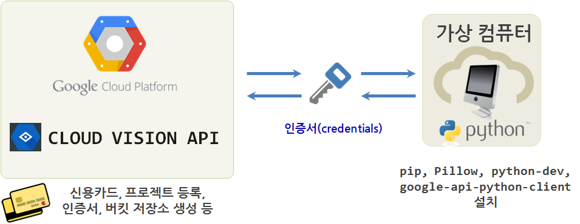
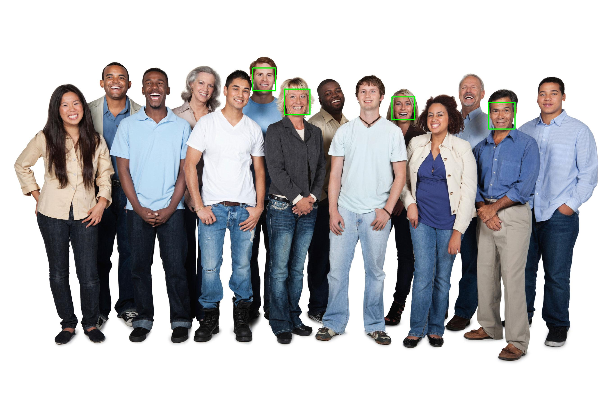

xwMOOC 딥러닝
구글 클라우드 비젼
학습 목표
- 구글 클라우드 비젼 API를 이해한다.
- 구글 클라우드 비젼 API를 설치한다.
- 구글 비젼 API를 통해 얼굴인식, 명소인식, 물체를 식별한다.

1. 구글 클라우드 비젼 API 인증 준비
실시간 영상처리는 차치하고 정적 이미지를 인식하고 처리하는데 구글 클라우드 비젼 API를 통해 일단 감을 잡는 것이 진지한 영상처리를 검토하기 전에 필요합니다.
- 대부분 구글 클라우드 계정은 생성(없는 경우 하나 생성)되었으니 생략하고, Google Cloud Platform
Project Page로 가서 새로운 이름을 갖는 프로젝트 페이지를 생성한다.- 현재 시점 국내 클라우드 제공업체는 아마존 AWS, 마이크로소프트 Azure, IBM Softlayer 등 많은 업체가 다양한 서비스를 뿜어내고 있고, 구글의 구글 Google Cloud Platform도 동일한 클라우드 시장에서 각축을 벌이고 있다.
- 구글 클라우드 비젼 API(이하 구글 비젼 API )는 초창기 무료에서 이제는 유료 비즈니스 모델을 추구하기 때문에 사진을 던져넣고 사진에 어떤 정보가 있는지 알아 보려면 일정 댓가를 지불해야 한다. 따라서 빌링 카드 정보를 등록한다.
- 클라우드 제공업체의 경우 거의 대부분이 신용카드 등록을 요구한다. 물론 첫 30 ~ 60일은 무료, 그 이후로 과금을 한다.
- 구글 비젼 API 가격정보를 통해 월 1,000장까지는 무료, 1,000,000 장까지는 1,000 장당 $2.5 ~ $5 달러를 과금을 한다고 하니 사전에 면밀히 검토하고 적절히 활용하기 바란다.
- 구글 비젼 API 사용자를 인증해주는 크리덴셜(Credentail) 인증서를 발급받는다.
- 인증서는 무척 중요한 것으로 이를 분실할 경우 엄청난 요금청구를 받을 수 있다.
Google Cloud Platform→Billing→Budgets & alerts메뉴로 가서 한도 설정 및 경고를 받을 수 있도록 사전에 설정한다. 이를 통해 해킹등이 발생할 경우 초동대처가 가능하다.
Google Cloud Platform→API Manager→Overview메뉴로 가서enable해서 구글 비젼을 활성화시킨다.Google Cloud Platform→API Manager→Credentials메뉴로 가서Credentials→Create credentials→ Service account key 를 통해 파이썬 응용프로그램이 구글 비전 컴퓨터와 상호 인증하도록 만든다.
- 인증서는 아스키 파일로 된 정보로
.json파일로 다운로드 받아 안전하게 디렉토리에 저장시킨다.- 임의 파일명을 지정한다. 예를 들어,
gcv-credential.json
- 임의 파일명을 지정한다. 예를 들어,
- 인증서는 무척 중요한 것으로 이를 분실할 경우 엄청난 요금청구를 받을 수 있다.
- 저장한 인증서를 경로명에 추가시킨다.
- 반복해서 사용할 경우
.bashrc파일에 환경변수로 추가시킨다.export GOOGLE_APPLICATION_CREDENTIALS=/home/vagrant/gcv-credential.json
source .bashrc명령라인 콘솔에서 지정하면 끝.
- 반복해서 사용할 경우
2. 파이썬 응용프로그램 클라이언트 준비
.json 인증서를 다운로드 받아 이미지 인식 및 처리를 할 컴퓨터에 환경설정을 사실 시작한 것이다. 이제 본격적으로 이를 시작해 나가보자.
- 앞서 Google Cloud Platform
Project Page로 가서 새로운 이름을 갖는 프로젝트 페이지를 생성했다. - 또한, 구글 비젼 API 사용자를 인증해주는 크리덴셜(Credentail) 인증서를 발급받았다.
- 구글 비젼 API를 사용할 언어를 정하고 설치한다.
- 파이썬, NODE.JS, 자바, 고(GO)를 지원한다.
- 파이썬
pip를 설치한다.wget https://bootstrap.pypa.io/get-pip.pysudo python get-pip.py
- 구글 API 파이썬 클라이언트를 설치한다.
sudo pip install --upgrade google-api-python-client
- 파이썬 이미지 라이브러리 Pillow를 설치한다.
sudo pip install Pillow- 만약 오류가 나면,
sudo apt-get install python-dev명령어를 실행하고 Pillow를 설치한다.
3. 헬로우 월드 파이썬 프로그램 실행 1
3.1. 헬로우 월드 표식 생성 예제 실행
argparse 라이브러리로 이미지를 입력받아, 구글 비젼 API 인증서를 통해 파이썬 응용프로그램을 인증받아 불러온 이미지 정보를 base64으로 인코딩해 구글 비젼 API를 통해 전달한 후에 결과 값을 받아 이미지에 어떤 것이 들어있는지 출력하는 프로그램이다.

"""
This script uses the Vision API's label detection capabilities to find a label
based on an image's content.
To run the example, install the necessary libraries by running:
pip install -r requirements.txt
Run the script on an image to get a label, E.g.:
./label.py <path-to-image>
"""
import argparse
import base64
import httplib2
from googleapiclient import discovery
from oauth2client.client import GoogleCredentials
DISCOVERY_URL='https://{api}.googleapis.com/$discovery/rest?version={apiVersion}'
def main(photo_file):
"""Run a label request on a single image"""
credentials = GoogleCredentials.get_application_default()
service = discovery.build('vision', 'v1', credentials=credentials,
discoveryServiceUrl=DISCOVERY_URL)
with open(photo_file, 'rb') as image:
image_content = base64.b64encode(image.read())
service_request = service.images().annotate(body={
'requests': [{
'image': {
'content': image_content.decode('UTF-8')
},
'features': [{
'type': 'LABEL_DETECTION',
'maxResults': 1
}]
}]
})
response = service_request.execute()
label = response['responses'][0]['labelAnnotations'][0]['description']
print('Found label: %s for %s' % (label, photo_file))
return 0
if __name__ == '__main__':
parser = argparse.ArgumentParser()
parser.add_argument('image_file', help='The image you\'d like to label.')
args = parser.parse_args()
main(args.image_file)python label.py ../images/wagon.jpg 의 경우 wagon.jpg 파일을 인자로 넘기면 label.py 파이썬 프로그래밍 이를 구글 비젼 API를 통해 전달하고 결과를 출력한다.
$ python label.py ../images/wagon.jpg
Found label: horse and buggy for ../images/wagon.jpg
$ python label.py ../images/pororo.jpg
Found label: cartoon for ../images/pororo.jpg
$ python label.py ../images/trilobite.jpg
Found label: fossil for ../images/trilobite.jpg실행결과 첫번째 사진은 말과 사륜차(horse and buggy), 두번째 사진은 만화(cartoon), 세번째 사진은 화석(fossil) 결과를 반환하고 있다.
| wagon.jpg | pororo.jpg | trilobite.jpg |
|---|---|---|
 |
 |
 |
| horse and buggy | cartoon | fossil |
3.2. 헬로우 월드 명소 인식 예제 실행 2
주요 명소(landmark)를 인식하는 예제를 실행해보자.
"""Identifies the landmark for the given image."""
import argparse
from googleapiclient import discovery
import httplib2
from oauth2client.client import GoogleCredentials
DISCOVERY_URL='https://{api}.googleapis.com/$discovery/rest?version={apiVersion}'
def get_vision_service():
credentials = GoogleCredentials.get_application_default()
return discovery.build('vision', 'v1', credentials=credentials,
discoveryServiceUrl=DISCOVERY_URL)
def identify_landmark(gcs_uri, max_results=4):
"""Uses the Vision API to identify the landmark in the given image.
Args:
gcs_uri: A uri of the form: gs://bucket/object
Returns:
An array of dicts with information about the landmarks in the picture.
"""
batch_request = [{
'image': {
'source': {
'gcs_image_uri': gcs_uri
}
},
'features': [{
'type': 'LANDMARK_DETECTION',
'maxResults': max_results,
}]
}]
service = get_vision_service()
request = service.images().annotate(body={
'requests': batch_request,
})
response = request.execute()
return response['responses'][0].get('landmarkAnnotations', None)
def main(gcs_uri):
if gcs_uri[:5] != 'gs://':
raise Exception('Image uri must be of the form gs://bucket/object')
annotations = identify_landmark(gcs_uri)
if not annotations:
print('No landmark identified')
else:
print('\n'.join(a['description'] for a in annotations))
if __name__ == '__main__':
parser = argparse.ArgumentParser(
description='Identifies the landmark in the given image.')
parser.add_argument(
'gcs_uri', help=('The Google Cloud Storage uri to the image to identify'
', of the form: gs://bucket_name/object_name.jpg'))
args = parser.parse_args()
main(args.gcs_uri)주의할 점은 인식할 이미지를 구글 클라우드 버킷에 넣어야 된다는 점이다. korea-khm.jpg 이미지 파일은 구글 클라우드 버킷에 미리 Upload 했다.
Google Cloud Platform → STORAGE → Storage → 생성한 trilobite 버킷 클릭 → UPLOAD FILES
광화문 사진을 근처 경복궁으로 인식했다.
$ python detect_landmark.py gs://trilobite/korea-khm.jpg
Gyeongbokgung
Gyeongbokgung3.3. 헬로우 월드 얼굴 인식 예제 실행 3
사진에서 얼굴을 인식하고 나서 인식된 얼굴에 녹색 사각형을 얼굴위에 그리는 파이썬 프로그램이다.
"""Draws squares around faces in the given image."""
import argparse
import base64
from PIL import Image
from PIL import ImageDraw
from googleapiclient import discovery
import httplib2
from oauth2client.client import GoogleCredentials
# [START get_vision_service]
DISCOVERY_URL='https://{api}.googleapis.com/$discovery/rest?version={apiVersion}'
def get_vision_service():
credentials = GoogleCredentials.get_application_default()
return discovery.build('vision', 'v1', credentials=credentials,
discoveryServiceUrl=DISCOVERY_URL)
# [END get_vision_service]
# [START detect_face]
def detect_face(face_file, max_results=4):
"""Uses the Vision API to detect faces in the given file.
Args:
face_file: A file-like object containing an image with faces.
Returns:
An array of dicts with information about the faces in the picture.
"""
image_content = face_file.read()
batch_request = [{
'image': {
'content': base64.b64encode(image_content).decode('UTF-8')
},
'features': [{
'type': 'FACE_DETECTION',
'maxResults': max_results,
}]
}]
service = get_vision_service()
request = service.images().annotate(body={
'requests': batch_request,
})
response = request.execute()
return response['responses'][0]['faceAnnotations']
# [END detect_face]
# [START highlight_faces]
def highlight_faces(image, faces, output_filename):
"""Draws a polygon around the faces, then saves to output_filename.
Args:
image: a file containing the image with the faces.
faces: a list of faces found in the file. This should be in the format
returned by the Vision API.
output_filename: the name of the image file to be created, where the faces
have polygons drawn around them.
"""
im = Image.open(image)
draw = ImageDraw.Draw(im)
for face in faces:
box = [(v.get('x', 0.0), v.get('y', 0.0)) for v in face['fdBoundingPoly']['vertices']]
draw.line(box + [box[0]], width=5, fill='#00ff00')
del draw
im.save(output_filename)
# [END highlight_faces]
# [START main]
def main(input_filename, output_filename, max_results):
with open(input_filename, 'rb') as image:
faces = detect_face(image, max_results)
print('Found %s face%s' % (len(faces), '' if len(faces) == 1 else 's'))
print('Writing to file %s' % output_filename)
# Reset the file pointer, so we can read the file again
image.seek(0)
highlight_faces(image, faces, output_filename)
# [END main]
if __name__ == '__main__':
parser = argparse.ArgumentParser(
description='Detects faces in the given image.')
parser.add_argument(
'input_image', help='the image you\'d like to detect faces in.')
parser.add_argument(
'--out', dest='output', default='out.jpg',
help='the name of the output file.')
parser.add_argument(
'--max-results', dest='max_results', default=4,
help='the max results of face detection.')
args = parser.parse_args()
main(args.input_image, args.output, args.max_results)사진에서 4개 얼굴만 인식하고 녹색 사각형을 인식된 얼굴에 올려 out.jpg 파일로 저장한다.
$ python faces.py ../images/people.jpg
Found 4 faces
Writing to file out.jpg| people.jpg | out.jpg |
|---|---|
 |
 |